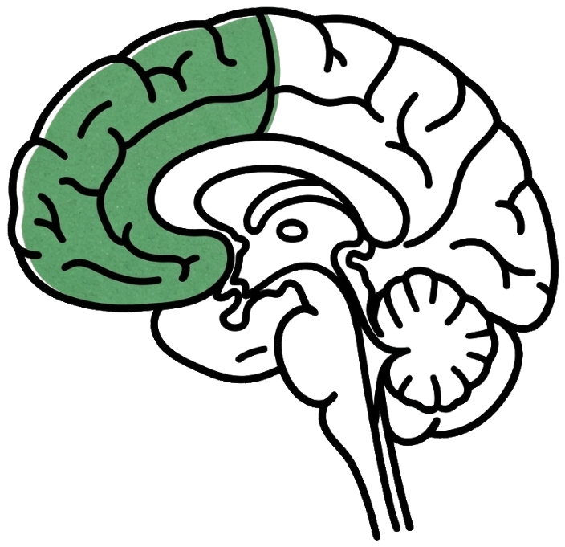

The Executive State
The higher-reasoning parts of the brain are active. Here we can think rationally, solve problems, and learn new skills.
Skillset: seeing more than one side, making reasonable choices, thinking critically about our own actions, setting long-term goals.